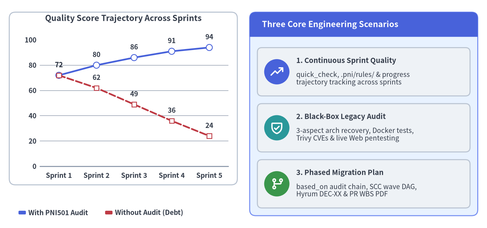
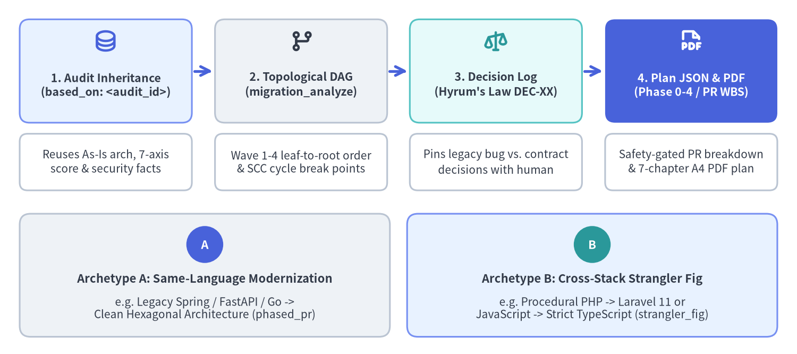

Primary Use Cases
pni501 (v0.1.3) supports the complete software engineering lifecycle across Python, Java, PHP, Go, TypeScript, and JavaScript through three primary operational scenarios: (1) Continuous Quality Measurement during active sprint development, (2) Black-Box Legacy & Security Auditing for inherited or undocumented systems, and (3) Prerequisite-Gated Migration Planning (based_on) for architectural modernization and cross-stack rewrites.

Source Code
from drawlib.canvas import save, setup
from drawlib.charts.line import LineChart
from drawlib.icons import phosphor
from drawlib.smartarts import CardList, Panel
from drawlib.styles import Colors, Styles
setup(width=158, height=74, dpi=150)
chart = LineChart(
categories=["Sprint 1", "Sprint 2", "Sprint 3", "Sprint 4", "Sprint 5"],
title="Quality Score Trajectory Across Sprints",
title_style=Styles.DarkBold.patch(text_size=12.0),
axis_line_style=Styles.Muted,
axis_text_style=Styles.DarkBold.patch(text_size=10.0),
grid_style=Styles.MutedThin,
value_text_style=Styles.DarkBold.patch(text_size=10.0),
background_style=Styles.Neutral.patch(shape_fill_color=Colors.White, shape_r=2.0),
)
chart.configure_y_axis(min_value=0, max_value=100, tick_step=20)
chart.add_series(
"With PNI501 Audit",
[72, 80, 86, 91, 94],
style=Styles.PrimaryBold,
line_width=2.8,
point_size=1.0,
)
chart.add_series(
"Without Audit (Debt)",
[72, 62, 49, 36, 24],
style=Styles.DangerDashedBold,
line_width=2.4,
line_style="dashed",
point_shape="square",
point_size=0.95,
)
chart.draw(xy=(3.0, 14.0), width=74.0, height=56.0)
chart.draw_legend(
xy=(6.0, 5.0),
text_style=Styles.DarkBold.patch(text_size=10.0),
orientation="horizontal",
item_gap=4.5,
)
right_panel = Panel(
"Three Core Engineering Scenarios",
header_variant="filled",
style=Styles.PrimaryNeutral.patch(shape_r=2.0),
header_style=Styles.PrimaryFlat,
text_style=Styles.WhiteBold.patch(text_size=12.0),
)
right_panel.draw(xy=(81.0, 4.0), width=74.0, height=66.0)
scenarios = CardList(
style=Styles.Neutral.patch(shape_r=1.5),
text_style=Styles.DarkBold.patch(text_size=10.5),
description_style=Styles.Dark.patch(text_size=10.0),
badge_shape="circle",
badge_style=Styles.PrimaryFlat,
badge_text_style=Styles.WhiteBold.patch(text_size=10.0),
icon_style=Styles.WhiteBold,
direction="vertical",
spacing=2.5,
)
scenarios.add(
"1. Continuous Sprint Quality",
"quick_check, .pni/rules/ & progress\ntrajectory tracking across sprints",
icon=phosphor.trend_up,
)
scenarios.add(
"2. Black-Box Legacy Audit",
"3-aspect arch recovery, Docker tests,\nTrivy CVEs & live Web pentesting",
badge_style=Styles.SecondaryFlat,
icon=phosphor.shield_check,
)
scenarios.add(
"3. Phased Migration Plan",
"based_on audit chain, SCC wave DAG,\nHyrum DEC-XX & PR WBS PDF",
badge_style=Styles.SuccessFlat,
icon=phosphor.git_branch,
)
scenarios.draw(xy=(83.5, 6.5), width=69.0, height=52.0)
save()
1. Scenario 1: Continuous Quality & Progress Governance in Active Development
pni501 was originally created to prevent technical debt from silently accumulating during rapid feature delivery. When teams prioritize velocity without automated architectural guardrails, circular dependencies, cyclomatic complexity, untyped boundaries, and untested edge cases compound from sprint to sprint (the dashed red trajectory above).
By integrating pni501 into sprint reviews and milestone checkpoints across any of the 6 supported languages:
- Fast Iterative Checks (
quick_check): Runquick_check(repo_structure_audit-><lang>_ast_audit->emit_score) to detect structural regressions, typing/generic drops, or complexity spikes in seconds without waiting for full report compilation. - Codified Team Standards (
.pni/rules/): Customize.pni/rules/so every Code AI Agent enforces identical architectural layer boundaries and framework conventions across the entire team. - Longitudinal Progress & Git Governance (
category: progress): Combine.pni/history/audit/<id>.jsonlwithprogress_assessmentandwrite_progress_reportto track milestone delivery, non-destructivegit merge-treebranch conflict simulations, and LOC/test/score trends in a 5-chapter PDF report (reports/<target>_progress.pdf).
# Run a fast sprint health check or track longitudinal project progress
pni workflows start quick_check --supersede
pni progress init project_progress && pni progress validate project_progress
2. Scenario 2: Multi-Modal Auditing of Legacy & Black-Box Repositories
When inheriting an unfamiliar repository, assessing an acquisition target, or preparing a legacy monolith (Python, Java, PHP, Go, TypeScript, or JavaScript) for production hardening, documentation is often outdated or nonexistent.
full_audit performs a comprehensive, zero-hallucination diagnostic across four inspection layers:
- Specification-Free 3-Aspect Architecture Recovery (
architecture_analysis): Reconstructs the As-Is system acrosspurpose_and_stack,layers_and_modules, andflows_and_state, verifying every cited file path againstmodule_inventory(.pni/cache/<wf>/architecture.json). - Polyglot AST & Maintainability Telemetry (
<lang>_ast_audit): Quantifies cyclomatic complexity, module fan-in/fan-out, circular dependency SCCs, API route inventories, and dangerous code sinks. - Isolated Container Runtime & Supply-Chain Security (
container_runtime_audit,security_vulnerability_audit): Verifies whether the project actually builds, passes offline unit tests, and boots inside an isolated Docker container while scanning dependencies, Dockerfiles, and secrets via socketlessTrivy. - Dynamic Loopback Web Penetration Testing (
web_penetration_audit): Launches the application inside a loopback container and executes target-specificpytest+httpxsecurity probes (SQLi,XSS,SSRF,IDOR, auth bypass) from.pni/pentests/<target>/.
The result is a 7-axis ScoreResult (0–100 / S–D grade) with hotspot density rankings and a 7-chapter A4 PDF report (reports/<target>.pdf) featuring P0–P2 remediation plans that both executives and engineers can act on immediately.
3. Scenario 3: Prerequisite-Gated Migration Execution Planning (based_on)
Once a legacy repository has been audited, teams frequently need a concrete execution plan to modernize it—either refactoring in-place to Clean/Hexagonal Architecture or migrating across frameworks and languages using the Strangler Fig pattern.

Source Code
from drawlib.canvas import save, setup
from drawlib.diagrams.architecture import ArchitectureDiagram, Node, PhosphorIcon
from drawlib.smartarts import CardList
from drawlib.styles import Colors, Styles
setup(width=162, height=72, dpi=150)
diag = ArchitectureDiagram(
node_style=Styles.DarkBold,
node_text_style=Styles.DarkBold.patch(text_size=10.2, text_line_spacing=1.3),
edge_style=Styles.PrimaryBold,
edge_text_style=Styles.Dark.patch(text_size=10.0),
width=162,
height=72,
)
stages = [
(
21.5,
"1. Audit Inheritance\n(based_on: <audit_id>)",
"Reuses As-Is arch, 7-axis\nscore & security facts",
PhosphorIcon.DATABASE,
Styles.PrimaryBold,
Styles.DarkBold.patch(text_size=10.2),
Styles.PrimaryNeutral.patch(shape_r=2.0),
),
(
61.2,
"2. Topological DAG\n(migration_analyze)",
"Wave 1-4 leaf-to-root order\n& SCC cycle break points",
PhosphorIcon.GIT_BRANCH,
Styles.DarkBold,
Styles.DarkBold.patch(text_size=10.2),
Styles.Neutral.patch(shape_r=2.0),
),
(
100.8,
"3. Decision Log\n(Hyrum's Law DEC-XX)",
"Pins legacy bug vs. contract\ndecisions with human",
PhosphorIcon.SCALES,
Styles.SecondaryBold,
Styles.DarkBold.patch(text_size=10.2),
Styles.SecondaryNeutral.patch(shape_r=2.0),
),
(
140.5,
"4. Plan JSON & PDF\n(Phase 0-4 / PR WBS)",
"Safety-gated PR breakdown\n& 7-chapter A4 PDF plan",
PhosphorIcon.FILE_PDF,
Styles.WhiteBold,
Styles.WhiteBold.patch(text_size=10.2),
Styles.PrimaryFlat.patch(shape_r=2.0),
),
]
stage_nodes = []
for cx, title_txt, desc_txt, icon_enum, icon_st, txt_st, card_st in stages:
s_node = diag.add(
Node(
text=title_txt,
width=35.0,
height=21.0,
icon=icon_enum,
icon_size=5.0,
style=icon_st,
text_style=txt_st,
card_style=card_st,
),
xy=(cx, 57.5),
)
diag.add(
Node(
text=desc_txt,
width=35.0,
height=11.5,
text_style=Styles.Dark.patch(text_size=10.0),
card_style=Styles.Neutral.patch(shape_fill_color=Colors.White, shape_r=1.6),
),
xy=(cx, 39.0),
)
stage_nodes.append(s_node)
for idx in range(len(stage_nodes) - 1):
diag.connect(stage_nodes[idx], stage_nodes[idx + 1], padding=0.5)
diag.draw(xy=(0, 0))
archetypes = CardList(
style=Styles.Neutral.patch(shape_r=1.6),
text_style=Styles.DarkBold.patch(text_size=10.5),
description_style=Styles.Dark.patch(text_size=10.0),
badge_shape="circle",
badge_style=Styles.PrimaryFlat,
badge_text_style=Styles.WhiteBold.patch(text_size=10.5),
direction="horizontal",
spacing=3.5,
)
archetypes.add(
"Archetype A: Same-Language Modernization",
description="e.g. Legacy Spring / FastAPI / Go ->\nClean Hexagonal Architecture (phased_pr)",
badge_text="A",
style=Styles.Neutral,
)
archetypes.add(
"Archetype B: Cross-Stack Strangler Fig",
description="e.g. Procedural PHP -> Laravel 11 or\nJavaScript -> Strict TypeScript (strangler_fig)",
badge_text="B",
style=Styles.PrimaryNeutral,
badge_style=Styles.SecondaryFlat,
)
archetypes.draw(xy=(4.0, 3.5), width=154.0, height=25.0)
save()
Instead of re-scanning the repository from scratch, a pni501 migration workflow (category: migration) declares based_on: <audit_workflow_id>:
- Fail-Closed Audit Inheritance (
based_on):pni workflows start <migration_id>verifies that<audit_workflow_id>has aCOMPLETEDrun in.pni/cache/workflow_state.dband automatically inherits itstargets,ProjectFacts,AstFacts,RuntimeFacts,SecurityFacts,ArchitectureRecord, andScoreResult. - Topological Dependency & Wave Analysis (
migration_analyze): Computes strongly connected components (SCCs), external boundary touchpoints (DB/HTTP/Filesystem/Env), and leaf-to-entrypointrefactoring_waves(Wave 1..Wave N) so refactoring starts with zero-dependency leaf modules. - Hyrum's Law Decision Log (
DEC-XX): Prompts the engineer during pre-flight clarification to decide whether ambiguous legacy behaviors and bug-risk quirks should be preserved for backward compatibility or fixed in Phase 3 (bug_handling_policy: ask_human). - PR-Granular Execution Plan & 7-Chapter PDF: Emits
reports/<target>_migration_plan.jsonand compilesreports/<target>_migration.pdfcoveringPhase 0(Characterization Test Harness) throughPhase 4(Legacy Decommission) with per-PR verification gates and rollback triggers.
4. Scenario Comparison Matrix
| Dimension | Scenario 1: Continuous Quality | Scenario 2: Legacy / Security Audit | Scenario 3: Migration Planning |
|---|---|---|---|
| Workflow Category | audit (quick_check) / progress |
audit (full_audit) |
migration (based_on: <audit_id>) |
| Primary Composite Actions | repo_structure_audit, <lang>_ast_audit, emit_score, progress_assessment |
All 15 audit actions including container_runtime_audit, security_vulnerability_audit, web_penetration_audit |
migration_proposal, write_migration_report |
| JSON Deliverable | reports/<target>_score.json / *_progress.json |
reports/<target>_score.json + .pni/cache/<wf>/architecture.json |
reports/<target>_migration_plan.json |
| Visual PDF Deliverable | Optional (or 5-chapter *_progress.pdf) |
7-chapter Health Audit PDF (reports/<target>.pdf) |
7-chapter Migration Plan PDF (reports/<target>_migration.pdf) |
Continue to Domain Architecture & Cascade to explore how pni501 is structured internally.